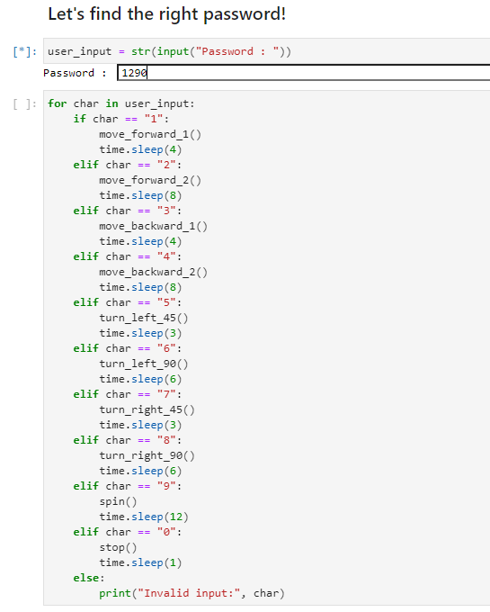

Mission
Mission: Let's solve the password and reach the goal point!
{kind=link}
How to Play
Arrive at the goal point by freely moving the robot through a combination of numbers from 0 to 9.
To move the robot, we use Python functions.
First, import the required Python modules.
import rospy import json from std_msgs.msg import UInt8MultiArray, String from nav_msgs.msg import Odometry import time import math
Create nodes and publishers to deliver messages to robots using ROS.
pub = rospy.Publisher('/robot_command', String, queue_size=1) rospy.init_node('zetabot', anonymous=True) time.sleep(1)
Write a function that goes forward by 1.
def move_forward_1(): tmp = {"MoveDelta": 1} msg = json.dumps(tmp) rospy.loginfo("Sent: %s", msg) pub.publish(msg)
Write a function that goes forward by 2.
def move_forward_2(): tmp = {"MoveDelta": 2} msg = json.dumps(tmp) rospy.loginfo("Sent: %s", msg) pub.publish(msg)
Write a function that goes backward by 1.
def move_backward_1(): tmp = {"MoveDelta": -1} msg = json.dumps(tmp) rospy.loginfo("Sent: %s", msg) pub.publish(msg)
Write a function that goes backward by 2.
def move_backward_2(): tmp = {"MoveDelta": -2} msg = json.dumps(tmp) rospy.loginfo("Sent: %s", msg) pub.publish(msg)
Write a function that turns 45 degrees to the right.
def turn_right_45(): tmp = {"TurnDelta": math.radians(int(-45))} msg = json.dumps(tmp) rospy.loginfo("Sent: %s", msg) pub.publish(msg)
Write a function that turns 90 degrees to the right.
def turn_right_90(): tmp = {"TurnDelta": math.radians(int(-90))} msg = json.dumps(tmp) rospy.loginfo("Sent: %s", msg) pub.publish(msg)
Write a function that turns 45 degrees to the left.
def turn_left_45(): tmp = {"TurnDelta": math.radians(int(45))} msg = json.dumps(tmp) rospy.loginfo("Sent: %s", msg) pub.publish(msg)
Write a function that turns 90 degrees to the left.
def turn_left_90(): tmp = {"TurnDelta": math.radians(int(90))} msg = json.dumps(tmp) rospy.loginfo("Sent: %s", msg) pub.publish(msg)
Write a function that turns 180 degrees to the left.
def spin(): tmp = {"TurnDelta": math.radians(int(180))} msg = json.dumps(tmp) rospy.loginfo("Sent: %s", msg) pub.publish(msg)
Write a function that stops in place.
def stop(): tmp = {"Stop": 0} msg = json.dumps(tmp) rospy.loginfo("Sent: %s", msg) pub.publish(msg)
Let’s Find the Right Password!
{kind=link}
Talk about how to enter your password.
This code allows Jupyterhub to accept numeric input.
user_input = str(input("Password : "))
After executing the cell by pressing “Shift + Enter”, enter a number and press “Enter” to save the password.
The robot moves differently depending on the password, which is a combination of entered numbers.
for char in user_input:
if char == "1":
move_forward_1()
time.sleep(4)
elif char == "2":
move_forward_2()
time.sleep(8)
elif char == "3":
move_backward_1()
time.sleep(4)
elif char == "4":
move_backward_2()
time.sleep(8)
elif char == "5":
turn_left_45()
time.sleep(3)
elif char == "6":
turn_left_90()
time.sleep(6)
elif char == "7":
turn_right_45()
time.sleep(3)
elif char == "8":
turn_right_90()
time.sleep(6)
elif char == "9":
spin()
time.sleep(12)
elif char == "0":
stop()
time.sleep(1)
else:
print("Invalid input:", char)
If you put in 1, it goes forward by 1, if you put in 2, it goes forward by 2.
If you put in 3, it goes backwards by 1, if you put in 4, it goes backward by 2.
If you put in 5, it goes 45 degrees to the left, and if you put in 6, it goes 90 degrees to the left.
If you put in 7, it goes 45 degrees to the right, and if you put in 8, it goes 90 degrees to the right.
If you put 9, it will rotate 180 degrees, if you put 0, it will stop in place.
For example, if you enter the password “1290”, The robot will move in the following order: forward 1, forward 2, turn 180 degrees, and stop.
{kind=link}
{kind=link}
Now, let’s make the robot arrive by entering the password suitable for the destination!